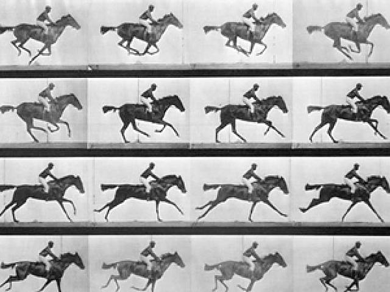
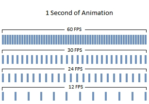

Todo comienza con un defecto

El video digital es básicamente una sucesión de imágenes estáticas a una frecuencia determinada por segundo. Este efecto de "movimiento" se basa en una deficiencia óptica que tenemos los humanos llamada persistencia retinaria que es el fenómeno por el cual una imagen permanece fijada en nuestra retina por un pequeño instante aún a pesar de no estar más allí. Esa pequeña fracción de segundo hace que vayamos conectando imágenes fijas estáticas, sin percibir los cortes, como si se tratase de un flujo continuo.
Cuanto mayor sea la cantidad de imágenes/cuadros por segundo (frames per second o fps) tenga un video, mayor será la fluidez que percibimos en él, y como podremos adivinar, mayor será su peso. ¿Han notado que algunas animaciones se ven como "entrecortadas" y que algunas transmisiones (por lo general deportivas) se las ve con mayor "fluidez"? Esto se debe a diferentes valores de fps. Una animación antigua tiene 12 cuadros por segundo, las transmisiones deportivas profesionales suelen tener 60 fps.

Los valores de fps más comunes para videos online son 24, 25 o 30 FPS. mayores cantidades de cuadros por segundo son casi imperceptibles para el ojo humano, y menores cantidades se ven como entrecortados para los hábitos visuales de hoy.